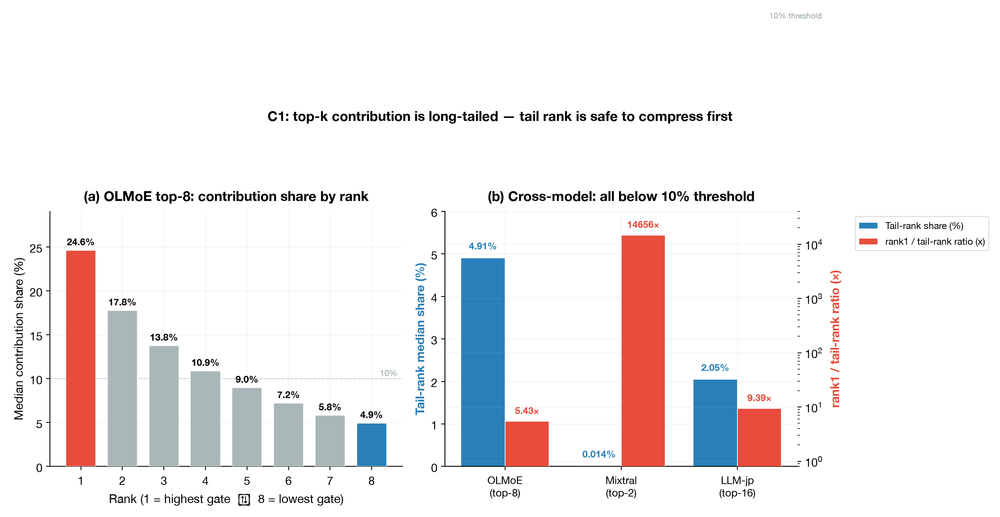
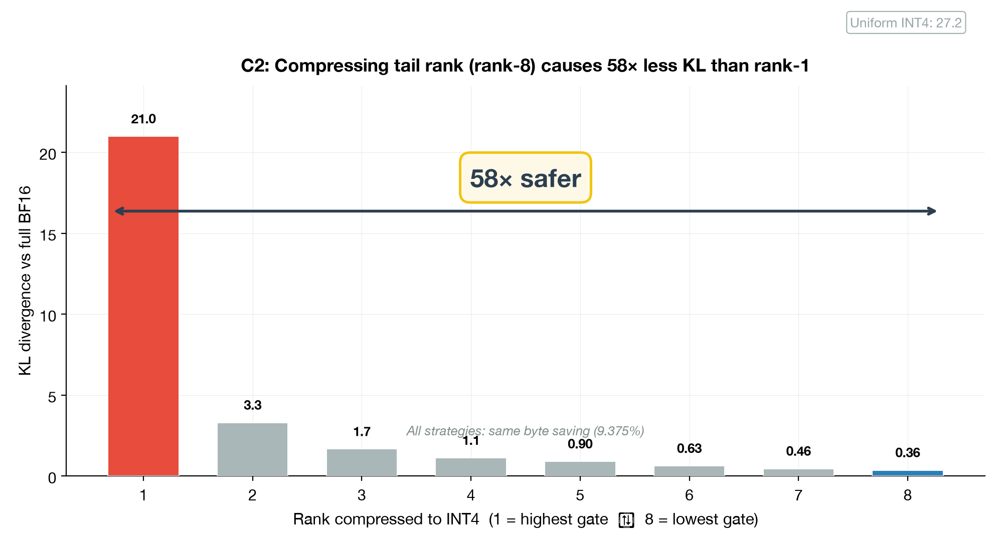
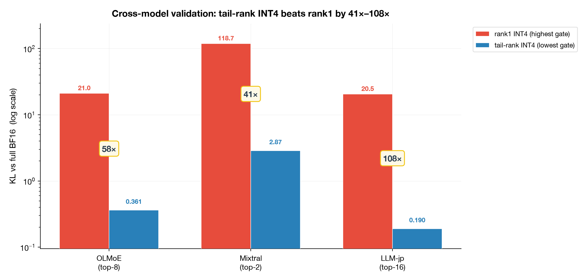
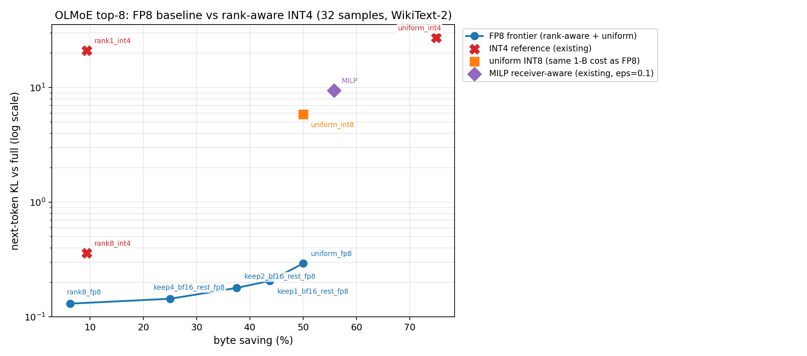
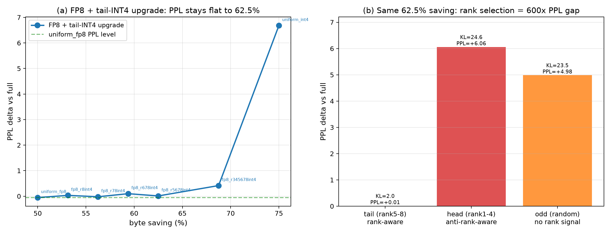

最开始的想法是：MoE combine 阶段要把多个 expert output 传回并加权求和，能不能不要所有 output 都用 BF16，而是按 gate/rank 给不同 output 用不同精度。
如果 uniform FP8 已经很好用，那从 BF16 出发做复杂 rank-aware mixed precision 就不够有说服力。所以这次先补了 FP8 fake-quant baseline。结果发现，uniform FP8 确实很强：直接拿到 50% byte saving，而且 KL/PPL 基本不变。
因此当前主线改成更窄、更容易防守的问题：既然所有 combine output 先用 FP8 已经是合理默认，那么 FP8 之后还能不能安全再压一部分到 INT4？
这里的两个信号分工如下：
rank 负责判断“能不能压”：哪些 expert output 的 gate
小、贡献小，可以从 FP8 继续降到 INT4。receiver_group 负责判断“先压哪里”：如果只能安全压一部分
output，就优先压流量更集中的通信端，目标是降低最热端的字节数。本报告围绕毕设方向 A（MoE Combine 通信压缩）完成前置验证。核心发现链：
gate×||output|| oracle 选 tail 的 KL 只差 1.43×，但 rank
在路由后就知道，oracle 要等 expert output 算完。本文不再挑战 FP8，而是在 FP8 之后找额外可压缩空间。做法是默认 combine output 全部 FP8；再只把低 gate 的 tail output 降到 INT4；如果要接系统目标，就把这些“质量上安全”的 INT4 预算优先放到热点 receiver/endpoint group。当前 receiver-aware 只证明了最热端字节数下降，真实 TBT/P99 仍需 A100 实测。
原方案的核心是
Profile-Guided Receiver-Aware Rank-LUT Partial Combine：用离线
profile 得到一张
LUT[layer, receiver_group, rank] -> precision，运行时只查表，不做在线优化。本次实验先补了
FP8 fake-quant baseline。结果发现，uniform FP8 在 combine
阶段已经能直接带来 50% byte saving，并且 KL/PPL 基本无损。
因此后续实验改成验证一个更具体的问题：
在 uniform FP8 已经很好用之后，MoE combine 里有没有一部分 output 可以继续降到 INT4 或直接 drop，而且不会明显伤质量？
围绕这个问题，后续实验追加了三组更具体的验证：
MoE 通信优化集中在 dispatch 和 expert placement；combine 阶段被忽视的独有自由度是——gate 权重作为重要性信号，免费可得，且在 dispatch 阶段结构上做不到。
每个 (token, expert) 对应独立 output，gate 权重已知，按 gate 区分传输精度天然规整。
| 阶段 | 传输对象 | gate/rank 信号是否自然可用 | 本文处理 |
|---|---|---|---|
| dispatch | 同一个 token hidden state 被复制给 top-k experts | rank 已知，但所有副本输入相同；按 rank 做差分量化会破坏规整性，且误差会经过 expert MLP 非线性放大 | 不作为主线 |
| combine | 每个 (token, expert) 返回独立 expert output |
gate/rank 已知，且最终线性加权聚合；tail output 的误差会被小 gate 缩放 | 主优化对象 |
文献背景： 真实 MoE serving 里，expert parallelism
通常会引入两次 all-to-all：先 dispatch token hidden states 到 expert
所在设备，再 combine expert outputs 回原 token 位置。Lina（USENIX
ATC’23）指出 distributed MoE
训练和推理低效的主要原因是模型计算中穿插的 all-to-all，并在 A100 testbed
上通过优化 all-to-all 将 P95 inference time 平均降低 1.63×。NCCL EP / DeepEP
一类系统工作也直接把 dispatch 和 combine
做成一等通信 primitive，面向 decoding 的 low-latency 模式和 prefill 的
high-throughput 模式分别优化。MixServe 进一步把 MoE EP 的
A2A 通信拆成 Dispatch 和 Combine，并给出同阶通信量
；其
DeepSeek-R1 / Qwen3 serving 实验通过优化 AR/A2A 通信获得 1.03–1.66× ITL
加速和 5.2%–50.3% throughput 提升。
因此本文的保守表述是：MoE all-to-all 已经被系统论文证明会显著影响 serving latency / tail latency；combine 是其中一条返回路径，而且它比 dispatch 更适合利用 gate/rank 做差分精度。
原方案（rank-aware mixed precision from BF16）在 ≤50% saving 被 uniform FP8 主导。reframe 后：
不与 uniform FP8 竞争，在其之上叠加：所有 output 先用 FP8 拿到 50% saving；然后只把低 gate 的 tail output 继续降到 INT4，把 saving 推到 62.5%。rank 的作用不是微调 FP8，而是防止把 head output 错压成 INT4。
drop 可以作为 aggressive upper bound 或 future work，但主线先采用更规整、更可部署的 FP8/INT4 差分量化。
静态查表：LUT[layer, receiver_group, rank] -> {BF16, FP8, INT4}，runtime
O(1)。
| 项 | 设置 |
|---|---|
| 机器 | Mac M5 Pro / 48GB unified memory / CPU-only |
| dtype | bfloat16 |
| 数据集 | WikiText-2 validation（PPL/KL）+ MMLU（下游任务） |
| 主模型 | OLMoE-1B-7B-0924（16 MoE layers, 64 experts, top-8） |
| 跨模型 | LLM-jp E32-k16（top-16）、Mixtral-TinyMistral（top-2） |
| FP8 实现 | E4M3 fake quant，per-token
scaling（torch.float8_e4m3fn），对齐 MegaScale/DeepSeek 的
per-tensor scaled FP8 |
| 术语 | 本报告中的含义 |
|---|---|
| rank | 某个 token 的 top-k experts 按 gate 从大到小排序后的位次。rank 1 是最高 gate，tail rank 是较低 gate 的 expert。 |
| gate | router 给 selected expert 的权重，combine 时用于 Σ g·o
的线性加权。 |
| FP8 默认方案 | 第一步不做复杂策略，所有 combine outputs 都用 FP8 传输，先稳定拿到 50% byte saving。 |
| FP8→INT4 边界 | 第二步才问：哪些 output 还能从 FP8 再降到 INT4。这个边界很危险，压错 head 会崩。 |
| receiver_group | 当前实验里按通信目标/专家归属做的流量分组，用来近似“哪个接收端更热”。它是 endpoint/receiver 近似分组，不是完整 serving 系统里的真实 request receiver。 |
| 误差逐层传递 | 前面 MoE 层的量化误差会改变后面层的输入；如果误差太大，后面层会继续放大这个偏差。 |
| KL / PPL | KL 衡量输出分布形状变化，PPL 衡量语言模型困惑度；二者是诊断指标，最终仍需下游任务和真实 latency。 |
| 实验 | 回答的问题 | 结论 |
|---|---|---|
| 实验一 | top-k 内部是否真的有 rank 长尾？ | 有，tail rank contribution share 在 3 个模型上都很小。 |
| 实验二 | rank 在不同精度档位是否都重要？ | INT4 下 rank 决定生死，FP8 下 rank 差异很小。 |
| 实验三 | uniform FP8 是否会打掉原方案？ | 会，所以必须把 FP8 当默认第一步，而不是对手。 |
| 实验四 | FP8 之后还能不能继续压？ | tail rank 从 FP8 降 INT4 可把 saving 推到 62.5%。 |
| 实验五 | 这个结论能否跨模型、能否接热点通信端？ | top-16 仍成立；receiver-aware 能降低最热端字节数。 |
| 实验六 | PPL/KL 退化是否转化成任务退化？ | MMLU 小样本未观察到下降，但仍需生成式任务补充。 |
对每个 token、每个 MoE layer、每个 selected expert rank，统计
contribution = gate_weight × ‖expert_output‖，share = contribution / sum(top-k)。
| 模型 | top-k | tail rank | tail-rank median share | rank1/tail ratio | 判定 |
|---|---|---|---|---|---|
| OLMoE | 8 | rank-8 | 4.91% | 5.43× | 强成立 |
| Mixtral-TinyMistral | 2 | rank-2 | 0.014% | 14656× | 极端成立 |
| LLM-jp E32-k16 | 16 | rank-16 | 2.05% | 9.39× | 强成立 |

图 1：(a) OLMoE top-8 各 rank 的 median contribution share——rank-8 仅占约 4.9%，rank-1 占约 28%，长尾明显。(b) 跨模型对比：三个模型的 tail-rank share 均远低于 10% 阈值。
第一，top-k experts 不是平均贡献，rank 越靠后，gate-weighted contribution 越小；第二，这个现象不只出现在 OLMoE，一个 top-2、一个 top-8、一个 top-16 模型都能看到 tail 很小。它支撑后续的基本假设：tail output 不是完全不能动，而是更适合先尝试低精度。
Mixtral 的 14656× 看起来非常大，主要是因为它是 top-2
模型，而且 router/gate 很接近 one-hot：很多 token 上 rank1
几乎拿走全部权重，rank2 的 median contribution 接近
0。这个结果不应作为主论据夸大，只说明“在另一个 MoE 架构里也能看到 tail
很小”。主证据仍然是 OLMoE top-8 和 LLM-jp top-16。
C1 成立：top-k 内部不是均匀的，rank 可以作为低成本的重要性近似信号。
做法很简单：每次只改一个 rank 的精度，其他设置不变，然后看模型质量掉多少。
这里还顺带做一个 FP8 对照：
这组实验的结论是：FP8 可以作为默认方案；INT4 只能优先给低 gate 的 tail output。
这一步故意只压一个 rank，目的是把“省了多少通信”固定住，只比较“压哪里”会不会影响质量。
OLMoE 是 top-8，每个 token 会选 8 个 expert output。这里有两种对照：
因为只压 8 个 rank 里的 1 个，而 BF16 降到 INT4 单个值省 75%
字节，所以总 byte saving 是
1/8 × 75% = 9.375%。这样设置后，rank8 和 rank1
的通信收益完全一样，质量差异就主要来自“压的是不是重要 output”。
这张表里的 strategy 只改变“哪个 rank 用 INT4”，其他设置保持一致：
rank8_int4：只把最低 gate 的 rank8 output 降到
INT4，其他 rank 不动。rank1_int4：只把最高 gate 的 rank1 output 降到
INT4，其他 rank 不动。uniform_int4：所有 rank 都用
INT4，是一个极端低精度参考。| strategy | byte saving | KL | PPL Δ |
|---|---|---|---|
rank8_int4（tail） |
9.375% | 0.361 | -0.029 |
rank1_int4（head） |
9.375% | 20.989 | +4.488 |
uniform_int4 |
75% | 27.152 | +6.678 |
跨模型一致：OLMoE 58×、Mixtral 41×、LLM-jp 108×。

图 2：将 INT4 逐一施加到 rank 1–8 上（相同 byte saving 9.375%）。压 rank-8 的 KL 仅 0.36，压 rank-1 的 KL 高达 21.0——低 58 倍。
这张图的关键不是“INT4 总体好不好”，而是控制变量：每次只压一个 rank，byte saving 完全相同。结果说明，同样省 9.375% 字节，压 tail 和压 head 的质量代价完全不是一个量级。因此 rank 在 INT4 场景下不是锦上添花，而是决定压缩是否安全的必要条件。

图 3：跨模型验证——三个模型上 tail-rank INT4 的 KL 均比 rank1 INT4 低一到两个数量级（41×–108×）。
图 3 是对图 2 的防偶然验证。它说明“head 不能乱压、tail 相对安全”不是 OLMoE 一个模型的巧合，而是在不同 top-k 结构里都成立。这里的跨模型结果也防住了一个质疑：rank 长尾可能只是某个 checkpoint 的 router 分布特例。
相同 byte saving（6.25%）下，FP8 rank sweep：
| rank | KL（rankN_fp8） |
|---|---|
| rank1 | 0.257 |
| rank8 | 0.130 |
| ratio | 1.97× |
这说明在 FP8 这个精度下，压最高 gate 的 rank1 和压最低 gate 的 rank8 都没有造成明显质量问题，二者 KL 只差约 2 倍。换句话说，FP8 已经比较稳，没必要为了“谁用 FP8”做复杂 rank 策略。
FP8 已经足够稳，所以在 FP8 里纠结“rank1 用 FP8 还是 rank8 用 FP8”意义不大。真正危险的是 INT4：如果把高 gate 的 head output 降到 INT4，误差会明显伤模型；如果只把低 gate 的 tail output 降到 INT4，模型效果影响极小。
所以这里的 rank 不是一个复杂调度器，而是一个简单规则：高 gate 的 output 不动，低 gate 的 output 才考虑继续压到 INT4。
| strategy | byte saving | KL | PPL Δ |
|---|---|---|---|
uniform_fp8 |
50% | 0.293 | -0.054 |
uniform_int8 |
50% | 5.859 | +1.281 |
rank8_int4 |
9.375% | 0.361 | -0.029 |
| MILP（旧, ε=0.1） | 55.8% | 9.414 | +1.442 |
这个表的作用是判断“原来从 BF16
出发做复杂混合精度”还有没有必要。这里要特别注意：rank8_int4
是旧策略，不是 uniform_fp8 + rank8_int4。
具体来说：
rank8_int4 表示：原本所有 rank 都按 BF16/full
precision 传，只把最低的 rank8 单独降到 INT4。因此它只省 9.375%
字节。
后文的 fp8_r8int4 才表示：先所有 rank 都用 FP8，再把
rank8 从 FP8 继续降到 INT4。因此它是在 50% saving 的基础上继续省，能到
53.1%。
uniform_fp8 和 uniform_int8 都是 50%
byte saving，但 FP8 的 KL 只有 0.293，INT8 的 KL 是
5.859。也就是说，同样 1 byte 传输，FP8 比 INT8 更适合 expert
output，因为浮点格式有动态范围。
rank8_int4 这个旧策略说明“压最低 rank
是安全的”，但它太保守，saving 只有 9.375%。所以如果不先采用 uniform
FP8，单独压一个 tail rank 的通信收益太弱。
旧 MILP 虽然做到 55.8% saving，但 KL 到 9.414，PPL 也涨了 +1.442。说明原来的 BF16/FP8/INT4/drop 混合优化，即使多省 5.8pp 字节，也付出了明显质量代价。
因此这个表真正说明的是：旧的“从 BF16 出发，只挑少数 rank 降
INT4”被 uniform FP8 打败了；但它不否定“uniform FP8 之后继续把 tail rank
降到 INT4”。
后面的实验四才是在验证新策略：uniform_fp8 -> fp8_r8int4 -> fp8_r78int4 -> fp8_r5678int4。

图 4：FP8 frontier（蓝）vs INT4 reference（红 X）vs MILP（紫菱形）。Y 轴 log scale。FP8 frontier 完全主导 INT4/MILP 策略空间。
这张图是本报告转向 FP8-first 叙事的关键。读图时看 Pareto 位置：越往右表示省字节越多，越往下表示 KL 越小；蓝色 FP8 曲线在相同 saving 下 KL 更低，在相同 KL 下 saving 更高。也就是说，原来从 BF16 出发设计复杂 mixed precision 的路线，在 50% saving 附近会被 uniform FP8 直接压住，所以后续主线必须改成“先 FP8，再研究哪些 tail 可以继续 INT4”。
直观理解：MoE 不是只量化一层。前面层的 output 一旦被 INT4/drop 扰动，后面层看到的 hidden state 就变了，后面的 router/expert 也可能跟着变。FP8 的误差太小，传到后面也不明显；INT4/drop 的误差大，就可能一层层放大。
当前方案不试图在线修复这种误差，而是避免在危险位置制造大误差：head rank 保 FP8，只让 tail rank 进 INT4。
从 uniform FP8 出发，把 tail rank 从 FP8 升级到 INT4。OLMoE top-8 扫描：
下面表格里，fp8_r8int4 表示“全 FP8 后只把 rank8 改成
INT4”，fp8_r78int4 表示“全 FP8 后把 rank7、8 改成
INT4”，以此类推。INT4 ranks 这一列表示有多少个 rank 从 FP8
继续降到了 INT4。
| strategy | saving | KL | PPL Δ | INT4 ranks |
|---|---|---|---|---|
uniform_fp8（默认第一步） |
50.0% | 0.293 | -0.054 | 0 |
fp8_r8int4 |
53.1% | 0.495 | +0.032 | 1 |
fp8_r78int4 |
56.25% | 0.831 | -0.022 | 2 |
fp8_r5678int4 |
62.5% | 2.005 | +0.010 | 4 |
fp8_r345678int4 |
68.75% | 4.495 | +0.415 | 6 |
uniform_int4 |
75.0% | 27.152 | +6.678 | 8 |
KL 平滑爬升（无突变），PPL 在 62.5% 前几乎不动。

图 5：(a) FP8+tail-INT4 升级扫描——PPL 在 62.5% saving 前几乎不崩；(b) 同 62.5% saving 下 rank 选择造成 tail 无损 vs head/random 崩 +5~6 的巨大差距。
图 5 是当前方法的主证据。左图回答“FP8 之后还能不能继续省”：随着更多 tail rank 从 FP8 降到 INT4，saving 从 50% 往 62.5% 推进，PPL 没有立即崩。右图回答“为什么必须按 rank 选”：同样 62.5% saving，如果 INT4 放在 rank5-8，退化很小；如果放在 rank1-4 或随机 rank，PPL 明显崩。换句话说，收益不是来自“多用了 INT4”本身，而是来自“只在低 gate 的 tail 上用 INT4”。
这张表固定总 saving 都是 62.5%，只改变“哪些 rank 被放到 INT4”。所以它不是在比较省多少，而是在比较同样省这么多字节时，INT4 放错位置会不会伤质量。
| strategy | KL | PPL Δ | INT4 放哪 |
|---|---|---|---|
fp8_r5678int4（tail） |
2.005 | +0.010 | rank5-8（rank-aware） |
fp8_r1357int4（odd） |
23.510 | +4.984 | 随机（无 rank 信号） |
fp8_r1234int4（head） |
24.591 | +6.058 | rank1-4（反 rank-aware） |
同 saving 下，INT4 放哪里决定结果：tail PPL +0.01，head/random +5~6。也就是说，额外 12.5pp saving 不是“随便挑一半 output 降到 INT4”就能拿到，必须避开高 gate 的 head output。
| 样本数 | tail PPL Δ | head PPL Δ | tail 增长率 |
|---|---|---|---|
| 32 | +0.010 | +6.058 | — |
| 128 | +0.198 | +5.355 | +0.188 |
| 256 | +0.296 | +7.353 | +0.098（减半） |
PPL 收敛在 ~+0.30（1.4% relative），增长率减半。head 持续崩 +6~7。结论在 256 样本下稳定。
| 62.5% saving | KL | PPL Δ |
|---|---|---|
| tail（rank-aware） | 1.296 | +0.350 |
| head（反 rank-aware） | 20.515 | +6.269 |
| odd（无 rank 信号） | 21.457 | +6.326 |
top-16 上 tail 温和（+0.35），head/random 崩（+6.3），KL 差 15.8×（比 OLMoE 的 8.7× 更强）。模式在 top-8 / top-16 上一致，非偶然。
| 选择信号 | KL | 运行时代价 |
|---|---|---|
| rank-tail（按位置） | 2.005 | 免费（gate 排序，dispatch 前确定） |
| contrib-tail（按 g×‖o‖） | 1.401 | 需 ‖o‖（expert 算完才知道） |
contribution = gate × ||expert_output||
更精确，但它有一个部署问题：必须等 expert output 算完之后才能知道
||output||。这时再决定压缩策略，会打断通信路径，也不适合静态查表。
rank 虽然粗糙，但路由结束后立刻可得，而且效果和 contribution oracle 同量级。因此这里说“rank 够用”的意思是：它不是最优 oracle，但它足够接近，而且几乎没有运行时代价。
rank 决定能不能压，receiver/endpoint group 决定优先压哪里。
前面的实验只回答质量问题：哪些 output 降到 INT4 不容易伤模型。系统上还要回答另一个问题：如果只能压一部分 tail output，应该优先压哪里？
这里采用一个保守的通信近似指标：每层看哪个 receiver/endpoint group 收到的 bytes 最多，认为它更可能是该层 combine 通信的瓶颈。然后比较两类策略：
下表里各 strategy 的含义：
uniform_fp8：所有 combine output 都用 FP8，是 50%
saving 的默认第一步。fp8top4_rest_int4：所有 group 都采用同一规则，top4
ranks 保 FP8，其余 tail ranks 用 INT4。recv_aware_hot1：只在每层最热的 1 个 receiver/endpoint
group 上，把安全 tail output 从 FP8 降到 INT4；其他 group 保 FP8。recv_aware_hot2：类似 hot1，但每层压最热的 2 个
group。| strategy | total save | max-recv save | max-byte save | imbalance | PPL Δ | KL |
|---|---|---|---|---|---|---|
uniform_fp8 |
50.0% | 50.0% | 50.0% | 1.183 | -0.054 | 0.293 |
fp8top4_rest_int4 |
62.5% | 62.8% | 62.7% | 1.175 | +0.010 | 2.005 |
recv_aware_hot1 |
53.8% | 56.3% | 56.3% | 1.119 | -0.017 | 0.780 |
recv_aware_hot2 |
56.9% | 59.1% | 59.1% | 1.124 | -0.071 | 1.087 |
关键结果：
上表各策略 total saving 不同。为证明 receiver 选择（而非少压）驱动 max-receiver 降低，固定每层压 1 个 group 的 tail-INT4（~53% total saving），比较选 hot vs uniform vs random vs cold：
| strategy | total save | max-recv bytes | vs hot1 | imbalance |
|---|---|---|---|---|
| hot1（receiver-aware） | 53.8% | 1.64B | 1.000× | 1.119 |
| roundrobin（均匀） | 53.3% | 1.82B | 1.110× | 1.228 |
| random | 53.4% | 1.81B | 1.100× | 1.218 |
| cold1（反 receiver-aware） | 52.7% | 1.88B | 1.145× | 1.251 |
同 total saving 下，hot1 的 max-receiver bytes 比其余策略低 10-14.5%。这说明热点选择确实能降低“最堵通信端”的字节数，而不是因为 hot1 总体压得更多或更少。
这部分的防守边界：receiver-aware 可以作为系统目标扩展，但目前还不是完整 latency 结论。更稳的说法是：
rank负责质量安全，receiver_group负责把安全压缩预算放到更像瓶颈的位置。
PPL/KL 退化是否转化为任务质量损失？MMLU 200 题（10 科目 × 20 题，zero-shot log-likelihood）：
| strategy | saving | MMLU accuracy |
|---|---|---|
| full | 0% | 42.5% |
| uniform_fp8 | 50% | 40.0% |
| fp8_r5678int4（tail） | 62.5% | 42.5% |
tail-INT4 在 62.5% saving 下 MMLU 准确率 = full（42.5%），不低于 uniform_fp8（40.0%）。+0.30 PPL 退化没有转化为任务准确率损失——PPL/KL 是诊断指标，不等于生成质量。
FP8 已经是很强的默认方案。本文现在更适合讲一个更具体的问题：FP8 之后，哪些 combine output 还能继续降到 INT4，以及这些安全的 INT4 预算应该优先用在哪些热点通信端。
FP8 应该作为默认第一步，而不是被挑战的
baseline。
实验发现 uniform FP8 已经能直接拿到 50% byte saving，且 KL/PPL
基本无损。因此论文不应该讲“rank-aware 替代 FP8”，而应该讲“FP8
之后还能不能继续安全省一点”。
rank 的作用很具体：判断哪些 output 可以从 FP8 继续降到
INT4。
在 FP8 档内，压 rank1 和压 rank8 的差距只有约 2×，说明 FP8
本身已经足够稳；但一旦进入 INT4，压 tail rank 和压 head rank 的 KL
差距达到 58×。所以 rank
不是一个泛泛的“重要性分数”，而是一条简单的安全规则：高 gate output
不压，低 gate output 才考虑 INT4。
tail-INT4 有用，head/random-INT4 不安全。
在同样 62.5% saving 下，tail 策略 PPL 基本不动，而 head/random 会带来 +5
到 +7 的 PPL 崩溃。这说明额外的 12.5pp saving 不是随便把一部分数据降到
INT4 就能拿到，必须用 rank 约束在 tail 上。
多层误差放大不是靠复杂补救解决，而是靠少碰危险位置。
FP8 多层叠加仍然温和，但 INT4/drop
会明显改变后续层输入。当前方案的处理方式很朴素：不在 head rank
上制造大误差，只在贡献小的 tail rank 上用 INT4。
receiver-aware
目前证明的是热点字节数下降，不是完整延迟收益。
质量安全先由 rank 决定；在已经确定只能压 tail
的前提下，receiver/endpoint group 决定这些安全压缩预算应该优先给谁。同
total saving 下，压 hot group 的 max-receiver bytes 比 random/cold 低
10-14.5%。这支持“热点优先压缩”的系统直觉，但真实 TBT/P99 还要在 A100
serving 或 trace replay 里测。
最终方法是一个保守但可部署的两级策略。
默认所有 combine output 用 FP8；然后用 rank 选出可以继续
INT4 的 tail；再用 receiver_group 把有限 INT4
预算放到热点通信端。运行时只是查
LUT[layer, receiver_group, rank] -> precision，不做在线优化。
| 局限 | 状态 | 计划 |
|---|---|---|
| 无真实 serving latency | 目前只有最热端字节数近似指标；它能说明热点字节下降，但不能等价于真实 TBT/P99 | 补 8×A100 trace-replay combine benchmark，测 pack / all-to-all / unpack / P50-P99 |
| 模型偏小 | OLMoE 1B / LLM-jp 920M | 补 Qwen top-4 / DeepSeek-V2-Lite top-6 |